Introduction - AIR CONDITIONING CASING AND COMPONENTS
- Path
- Descriptions > 50 AUXILIARY UNITS > 5040 AIR CONDITIONING CASING AND COMPONENTS > Introduction - AIR CONDITIONING CASING AND COMPONENTS
- Kind
- system description
- Applies to
- all engines; all production periods
- Interactive page
- https://sloeber94.github.io/elrnDB-a147/en/#/3026112
Applies to: all engines; all production periods
SPECIFICATIONS:
INTRODUCTION
As a result of primary and secondary physiologial processes involving the activities of human beings, the air in the environment in which they live is altered with an increase in the rate of carbon dioxide, a decrease in the percentage of oxygen, the emission of aromatic substances (e.g. from smoking) and an increase in the concentration of pathogenic bacteria; this all makes a closed environment less healthy, especially if a small area is involved.
One of the solutions for improving these conditions is the use of an air conditioning system.
An efficient air conditioning system fitted in the vehicle should control the main environmental factors which determine the physiological conditions for the well-being of people, namely:
- the temperature;
- the humidity;
- the speed of the air;
- the purity of the air in the passenger compartment.
The variation in the temperature and the humidity of the air in the passenger compartment is achieved by the following two systems:
- manually operated climate control system, which is fitted as standard on the vehicle.
- automatically controlled temperature (twin zone) and ventilation climate control system, available as an option of vehicles with higher specification levels.
The two systems described below, jointly as far as the systems which they share, such as for example the refrigerating cycle, are concerned and separately for all the different components, such as for example the systems for regulating and controlling the temperature of the air are concerned because in one the operating logic for the temperature (heating/mixing/cooling) in two distinctly different areas of the passenger compartment is far more sophisticated than in any manually operated system.
Coolant fluid
The fluids used in a refrigerating circuit as known as refrigerants. These are fluids which, in addition to having a LOW BOILING POINT at normal pressure, should also have:
- A LOW FREEZING POINT, to prevent solidification in even the harshest climates;
- A HIGH EVAPORATION TEMPERATURE (passage from a liquid state to a gaseous state);
- A LOW CRITICAL TEMPERATURE (maximum temperature above which it is no longer possible to liquify the gas, irrepsective of the pressure applied).
In addition, they should not be:
- EXPLOSIVE AND FLAMMABLE; these requirements are vital to avoid danger in the case of leaks inside the engine compartment;
- TOXIC OR NOXIOUS; in order not to create problems for people;
- OXIDIZING AND/OR CORROSIVE; in order not to destroy the system constituent materials;
- It should also be possible to mix them with the lubricants used in these sysetm to guarantee the perfect lubrication of all the system constituent components (compressor, expansion valve, pipes, connectors, etc.).
The most ecological of all refrigerant fluids currently used in automotive systems is hydrofluorocarbon (HCF) CN2F CF3 or R134a
Fluids for refrigerant systems
This fluid is necessary for lubricating the gaskets, seals, washers and other moving parts of the compressor. A certain amount of fluid is carried along in the circuit with the refrigerant and helps to keep the expansion valve in optimum operating condition. Only specific fluids which do not produce foam should be used in air conditioning systems. These are highly refined mineral oils from which the impurities, such as wax, sulphur and water have been thoroughly removed. Engine oil should not, under any circumstances, be used in air conditioning systems.
Always follow the compressor manufacturer's recommendations before introducing oil into the refrigerant system.
Main air conditioning system components
The main components of the air conditioning system are illustrated in the diagram.
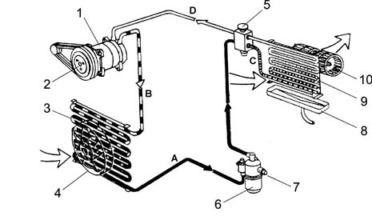
1 - Compressor 2 - Pulley with electro-magnetic type clutch 3 - Condenser 4 - Condenser cooling fan 5 - Thermostatic expansion valve 6 - Drier accumulator filter with reservoir function 7 - 4 stage pressure switch (high pressure) 8 - Evaporator condensation collection tank 9 - Cooling fan 10 - Evaporator A - Fluid under pressure B - Gas under pressure C - Fluid in vacuum D - Gas in vacuum
Refrigerant circuit (operation)
The aim of refrigerant equipment is to absorb heat from the atmosphere. In order to do this an air conditioner makes use of the behaviour of certain fluids (known as refrigerants) which are capable of cooling down (lowering their temperature) and changing state (from liquid to gas) when they are subjected to a substantial decrease in pressure and they expand. They are thereby able to absorb heat from the surrounding ambient. When their temperature increases, also increasing the pressure, they change state again (from gas to liquid) as they condense.
The first problem is therefore to liquefy this gas, which can only be achieved by bringing it to a temperature below evaporation (or boiling) point which, as we have already said, is -26° C at atmospheric pressure for R134a.
For this to be achieved at ambient temperature which, in our case, can be rather high (in the engine compartment), it is necessary to increase the evaporation point of the gas so that it remains liquid until the moment it is made to expand to produce the desired refrigerant effect.
To increase the boiling point of the gas it is necessary to increase its pressure, at the same time decreasing its temperature.
The system requires a certain amount of power in order to do this. This power, supplied by the compressor, is removed from the power produced by the engine.
The operating principle of the refrigerant cycle stages in a vehicle's air conditioning system can be summarized as follows.
The gaseous R134a refrigerant is drawn in by the compressor at a pressure of between 0.5 and 2 bar and by the end of the compression it reaches between 10 and 17 bar. At these pressures the boiling point reaches around 60 ° C.
This fluid, heated by the compression stage to 80 - 100 ° C, still in a gaseous state in the condenser where, as a result of the cooling air flow (produced by the movement of the vehicle or the action of the fan) which passes through, reaches condensation point, changing to a liquid state at high pressure.
The refrigerant then goes into a filter which has three functions: retaining impurities, absorbing the humidity contained in the circuit and working as a reserve reservoir for the actual refrigerant.
The refrigerant then reaches the expansion valve where it is introduced into the evaporator where the pressure is around 1.5 atm. (1.52 bar). At this pressure the liquid-saturated vapour sysetm for the refrigerant is in equilibrium at a temperature of about -7 ° C. At the same time, the air which passes through the evaporator (through the action of the fan), being at a considerably higher temperature than the refrigerant fluid it contains, causes boiling and complete evaporation by giving off this heat. The air, on cooling down, deposits some of the humidity it contains on the evaporator fins in the form of droplets which collect in a tank and are discharged outside the vehicle.
The air, which has been cooled and dehumidified, is sent to the inside of the vehicle. The refrigerant at the evaporator outlet is drawn in again by the compressor, starting a new cycle.
Summary of the refrigerant fluid's route:
- 1) In the compressor - the fluid coming from the evaporator is in a gaseous state (temp. -5, -7° C, pressure 0.5 - 2 bar). Compression stage - the gaseous fluid is heated (temp. 80 -100 ° C, pressure 10 - 17 bar).
- 2) Condenser - Compression stage: the fluid gives off heat to the outside, cools down and becomes liquid again (temp. 40 - 60° C, pressure 10 - 17 bar).
- 3) Thermostatic expansion valve - Expansion stage - the fluid loses pressure (0.5 - 2 bar to reach even 3 bar) and becomes a mixture of gas + liquid; the temperature is low, typical of air conditioning.
- 4) Evaporator - Evaporation stage - the fluid becomes completely gaseous because the hot air driven by the fan finds itself at a higher temperature than the refrigerant fluid causing it to boil and evaporate completely, giving off heat. The temperature is low, that of the air conditioning (pressure 0.5 - 2 bar).
TWIN LEVEL AUTOMATICALLY CONTROLLED CLIMATE CONTROL SYSTEM
The automatic climate control is managed by a control unit which, thanks to an extremely sophisticated operating logic, is capable of controlling the temperature in two areas of the passenger compartment, heating or cooling the incoming air so that it reaches the desired temperature. It is also capable of demisting 60% of the windscreen surface and 20% of the side windows relatively quickly (in about 5 minutes) which improves safety.
This performance is achieved thanks to the excellent software logic and the air distribution.
Location of system components
The diagram shows the location of the main components.
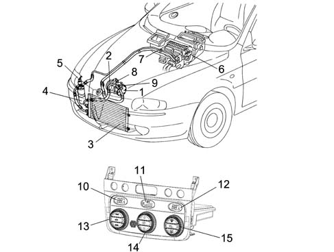
1 - Air conditioning compressor 2 - Pulley with compressor electro-magnet coupling 3 - Air conditioning condenser 4 - Drier filter 5 - 4 stage pressure switch 6 - Expansion valve 7 - Evaporator unit 8 - Low pressure connector (BP) 9 - High pressure connector (AP) 10 - Equivalent temperature/temperature set on driver's side display 11 - Heater fan speed display Fan icon OFF 12 - Equivalent temperature/temperature set on passenger side display 13 - Driver's temperature selector knob 14 - Heater fan speed control knob/OFF 15 - Passenger temperature selector knob
Interior air circulation diagram
The diagram illustrates the circulation of the air in the passenger compartment.
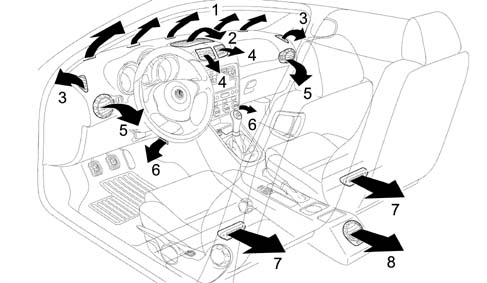
1 - Upper fixed vent for defrosting or demisting windscreen 2 - Upper centre adjustable vent 3 - Fixed vents for defrosting or demisting side windows 4 - Adjustable centre vents 5 - Adjustable side vents 6 - Front footwell fixed vents 7 - Rear footwell fixed vents 8 - Adjustable rear vent
COMPONENT DESCRIPTIONS
CONVEYOR/DISTRIBUTOR UNIT
It consists of two modules which contain inside:
- the fan
- the evaporator
- the actuators controlling the upper mixture, distribution and recirculation flaps
- the heater radiator
- the lower mixed air temperature sensor.
The diagram below illustrates a cross section of the assembly
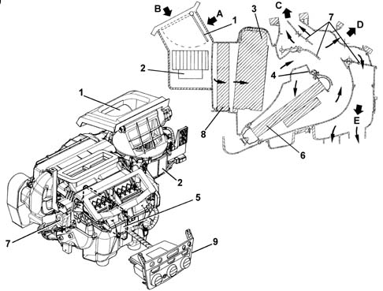
1 - Intake/recirculation air flap 2 - Electric fan 3 - Evaporator 4 - Air mixture flaps 5 - Mixture flaps partition 6 - Heater radiator 7 - Air distribution flaps 8 - Additional heater (diesel version) 9 - Climate control connector (NCL) A - Recirculation air flow B - Outside air flow C - Windscreen/side windows air flow D - Centre and side vents air flow E - Interior air vents flow
The electric fan directs the flow of outside air towards the interior of the vehicle.
The air introduced into the passenger compartment from the outside passes through a combined filter, i.e. consisting of two layers:
- the first 'particle' layer has the task of trapping the small particles of fine dust and pollen
- the second 'active charcoal' layer is designed to trap certain pollutant elements in the atmosphere.
If, on the other hand, the recirculation function is activated, the special flap directs the flow of air from the inside the pasenger compartment. The flow of air initally comes into contact with the evaporator, then it partly or totally envelops the heater radiator, depending on the position of the mixture flap. Lastly, the air is sent to the various vents depending on the position of the upper, centre and lower distribution flaps.
All the flaps are operated by electric motors controlled by the control unit.
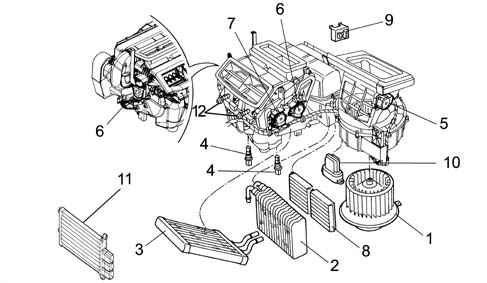
1 - Electric fan 2 - Evaporator 3 - Heater radiator 4 - Lower mixed air sensors 5 - Recirculation flap actuator 6 - Mixed air flap actuators 7 - Air distribution flap actuator 8 - Combined filter element (pollen filter) 9 - Air Quality Sensor 10 - Fan speed governor 11 - Additional heater (only for Diesel JTD versions) 12 - Upper mixed air sensors
The upper mixed air sensors are located at the dashboard vents
All the flaps are opreated by special actuators and kinematic mechanisms controlled by the control unit.
CLIMATE CONTROL CONNECTOR NCL OR ELECTRONIC CONTROL UNIT
The diagram below illustrates the system controls.
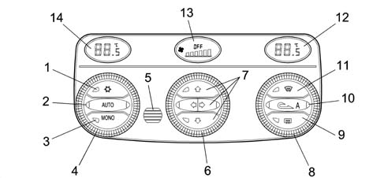
1 - Compressor enabling/disabling button (orange LED) 2 - AUTO button for automatic control of all functions (2 orange LEDs) 3 - MONO button controlling single/differentiated temperature selections (orange LED) 4 - Driver's temperature selector knob 5 - Passenger compartment temperature sensor protective grille 6 - Heater fan speed/OFF control knob 7 - Air distribution selection buttons (3 orange LEDs) 8 - Passenger temperature selector knob 9 - Heated rear windscreen button (amber LED) 10 - Air recirculation E/l button (2 orange-amber LEDs) A = automatic operation of recirculation (amber LED) 11 - MAX-DEF function button (amber LED) 12 - Equivalent temperature/passenger temperature setting display 13 - Display with heater fan speed bars (fan icon - OFF) 14 - Equivalent temperature/driver's temperature setting display
The climate control system automatically controls the temperature and ventilation with recirculation.
The user can select the desired temperature within the limitations of the system.
The control unit manages the automatic climate control system responsible for the temperature of the air in the two areas of the passenger compartment.
The split automatic climate control system controls the temperature on both the driver and passenger sides, heating or cooling the air introduced into the passenger compartment so that it reaches the desired level.
The control unit acquires information concerning the temperature from the outside air sensor, the treated air sensors (two upper and two lower), the passenger compartment sensor, the solar sensor, the demisting sensor and the pollution sensor as well as from the body computer (engine speed and vehicle speed). By processing this information using a special algorhythm, the microprocessor regulates the following parameters/functions:
- Air temperature at the driver/passenger vents.
- Air distribution to the vents.
- Fan speed (varies continuously).
- Compressor engagement.
- Recirculation.
The following parameters/functions can be modified manually:
- Fan speed.
- Distribution direction
- Compressor disabling
- Defrosting/demisting function
- Recirculation
The manual selections always take precedence over automatic selections and are stored until the user deliberately cancels the command, allowing the automatic device to take control over the relevant function. The manual setting of a function does not adversely affect the control of other functions set to automatic, in particular, the control of the temperature is always automatic when the system is running.
At each key on the system restores the conditions memorized when the engine was switched off, except for the MAX DEF cuntion which is zeroed.
The entire system can be switched OFF manually, completely deactivating the air conditioning system, using the centre knob (except for the recirculation and heated rear windscreen), insulating the passenger compartment from the outside ambient. The temperature setting symbols in the side displays also switch off. The outside temperature reading remains visible in the centre display of the instrument panel.
The MAX-DEF function makes it possible to group together a collection of actions which allow both the windscreen and the rearscreen to be demisted quickly.
At each key off the system, after having memorized the control/actuator situation, sets the distribution to Heat and the recirculation to open.
Functional state display
The display of the climate control system functional state is shown through LED and DISPLAY.
The displays are dimmed when the vehicle lights are switched on.
The symbols on the switches are lit up with the ignition ON.
Centre display
Negative, transflexual (red) displaying the air flow rate of the passenger compartment fan by means of bars, the fan icon and the word OFF.
Equivalent temperature setting display (driver and passenger)
Negative, transflexual (red), displaying the temperature requested by the driver and the passenger.
Recirculation function led
Possible functions:
- automatic recirculation LED A
- forced recirculation closed or on (passenger compartment air)
- forced recirculation open or off (outside air)
Two LEDs, one orange and one amber signalling:
Operation | Amber LED | Orange LED | Recirculation state |
|---|---|---|---|
AUTOMATIC | ON | OFF | RECIRCULATION/OUTSIDE |
FORCED CLOSED | OFF | ON | RECIRCULATION |
FORCED OPEN | OFF | OFF | OUTSIDE |
Compressor enabling function led (ice symbol)
Orange, signalling, if on, the Compressor Enabled state
Auto function led
Two orange LEDs signalling, if on, that all the functions, excluding recirculation, are managed by the control system.
One of the LEDs (the right one) goes out if there is at least one manual Flow rate or Distribution command.
The other LED (the left one) goes out if the system is not capable, on account of particular manual operations, of guaranteeing the required temperature being reached/maintained.
Max-def function led
Amber, signalling, if on, the MAX-DEF function being on.
Heated rear windscreen function led
Amber, signalling, if on, the heated rear windscreen function being on.
Control unit pin out
The electronic control unti has two connectors:
- A) 40 pin main connector
- B) 6 pin connector for passenger compartment sensor
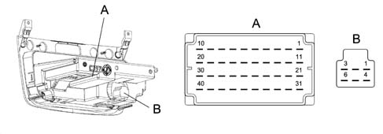
CONNECTOR A
Pin n° | Operation | Pin n° | Operation |
|---|---|---|---|
relay | Coil B2 recirculation actuator | 21 | Power earth NCL |
relay | Coil B1 recirculation actuator | 22 | Relay 2 (50A) additional heater PTC diesel only |
3 | Coil A2 recirculation actuator | 23 | Relay 1 (30A) additional heater PTC diesel only |
4 | Coil A1 recirculation actuator | 24 | Dimmed side lights positive |
5 | Left coil mixer actuator B2 | 25 | Positive controlled by ignition +int/A |
6 | Left coil mixer actuator B1 | 26 | Diagnostic line K |
7 | Left coil mixer actuator A2 | 27 | Pollution sensor PWM signal |
8 | Left coil mixer actuator A1 | 28 | Misting sensor PWM signal |
9 | Fan temperature feedback signal | 29 | Treated air sensor door |
10 | Not connected | 30 | Treated air sensor left |
11. | Right coil mixer actuator B2 | 31 | + 30 from body computer |
12. | Right coil mixer actuator B1 | 32 | Electronically protected NCL earth |
13 | Right coil mixer actuator A2 | 33 | Fan control PWM signal |
14 | Right coil mixer actuator A1 | 34 | CAN A network (L.V.) |
15 | Right coil distribution actuator B2 | 35 | CAN B network (H.V.) |
16 | Right coil distribution actuator B1 | 36 | 1-4 compressor enabling pressure switch |
17 | Right coil distribution actuator A2 | 37 | Passenger compartment sensor +NTC |
18 | Right coil distribution actuator A1 | 38 | +5V solar sensor supply |
19 | Right floor treated air sensor | 39 | Right solar sensor |
20 | Left floor treated air sensor | 40 | Left solar sensor |
CONNECTOR B
Pin n° | Operation | Pin n° | Operation |
|---|---|---|---|
1 | Positive controlled by ignition | 4 | Connection to pin 37 climate control unit (+NTC) |
2 | n.c. | 5 | n.c. |
3 | Power earth | 6 | Connection to pin 32 climate control unit (earth) |
Diagnosis
The control unit uses sensor monitoring and adjustment software with actuator self-adaption to record and store a series of anomalies and faults that could affect the system.
These stored errors may be read using an Examiner and connecting to the Body Computer diagnostic socket.
Controls and functions
Air flow rate/control unit off knob
Rotating the air flow rate control knob in an anti-clockwise direction beyond the minimum flow rate (decrease below 0 bars and fan off) causes the climate control unit to be switched off (OFF).
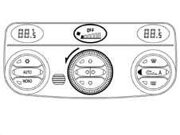
With the compressor enabled, the minimum air flow rate is one bar, therefore it is not possible to decrease the air flow rate below this value because the control unit would switch off.
The following actions take place in OFF:
- memorizing the current state
- switching off all the displays (with the exception of the OFF icon in the centre display) and the LEDs, with the exception of the heated rear windscreen, if activated.
- forced air recirculation closed and LED on
- compressor excluded
- fan excluded
- the mixture flap remains in the max cold position
- the distribution flap in VENT.
- is in the OFF state, the heated rear windscreen button is managed normally without activating the CLIMATE system.
Turning the air flow rate knob, in a clockwise direction, or pressing any button whatsoever (except the heated rear windscreen and recirculation) switches the system back on, implements the requested function, if there was none previously (otherwise it confirms it) and restores all the other operating conditions that the system had memorized previously, forcing the automatic control of the flow rate if the AUTO button was used to switch it on.
In OFF the recirculation button has a dual function (ON/OFF).
Opening the outside air intake flap, orange LED off.
Closing the outside air intake flap, orange LED on. Recirculation flap without automatic management, amber LED off.
Auto button
Pressing this button cancels any previous manual intervention and restores the automatic check on the following functions:
- Air distribution
- Fan speed
- Compressor
- Driver/passenger temperature setting check
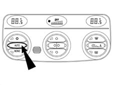
The three LEDs, Compressor and AUTO, when on, indicate that all the above functions are automatically controlled.
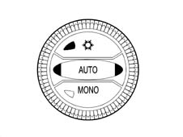
When the right LED is off this means that a Distribution or Ventilation manoeuvre has been carried out manually.
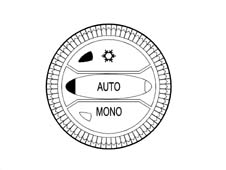
The left LED also goes out (mainly when the compressor is disabled manually) if the control system does not manage to reach or maintain the desired temperature.
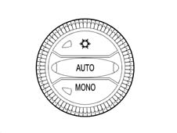
The button (A) which disables the Compressor does not necessarily switch off the right AUTO LED.
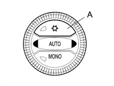
Compressor enabling/disabling button (led on - compressor enabled)
Pressing the button (A) switches off the LED, the compressor is disabled and the automatic recirculation function is enabled.
Once the button is pressed the function remains stored for an indefinite period even after the vehicle has stopped in the same way as the other manual controls.
The button is dual purpose and therefore pressing it a second time restores the automatic operation of the compressor (AUTO LED comes on).
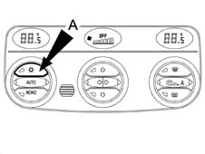
TEMPERATURE SETTING FLASHING LOGIC
Pressing button A with the LED off disables the compressor. Under these circumstances the system checks whether the outside temperature is higher or lower or the same as the temperature set.
With the compressor disabled the temperature in the passenger compartment cannot be lower than the outside temperature.
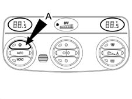
If the outside temperature is lower than the equivalent setting (Te<Tequiv. System) then the sysem works normally and is capable of fulfling the request without switching on the compressor.
If the outside temperature is the same as or higher than the equivalent temperature set, then the system is not capable of supplying the temperature request by the user and signals this showing the Tequiv. value on the display System, but flashing.
The flashing times are: 0.5 secs ON and 0.5 secs OFF repeated three times for a total of 3 seconds after which the fixed temperature setting remains on the display.
At the same time as this flashing, the Automatic LEDs go out until the Compressor enabling command is renewed.
If the outside temperature conditions higher than or the same as that set or with the button (A) on remain in the memory. The outside temperature reading flashing is repeated each time the engine is started up.
Mono button
Pressing the mono button has the following effect:
- the temperature set by the passenger button becomes the same as that set by the driver and the LED comes on.
From this moment the system behaves like a single zone system.
Pressing the MONO button again or changing the passenger temperature setting causes the following to happen:
- the MONO button LED goes out and the dual zone temperture control is restored.
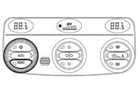
These functional states are maintained even after the ignition is switched on and off several times.
Passenger compartment temperature setting knobs
The passenger compartment temperature is set by the control unit each time the battery is connected at 24 ° C.
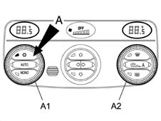
Users can alter the temperature settings using the appropriate knobs (driver A1, passenger A2).
Turning the knobs in a clockwise direction increases the temperature set, whilst turning them in an anti-clockwise direction decreases the temperature set.
Increases/decreases are in 0.5 ° C steps and one complete rotation of the knob is equivalent to 24 steps.
The maximum permissible difference between the driver's selection and the passenger's selection of 7° C.
Turning a knob until the above mentioned difference is reached, the system attaches the current adjustment (setting) of the knob which is still to the adjustment of the knob which is moving (neither knob takes precedence).
The temperature setting range, in MONO, is 16.5 to 32.5 ° C; below 16.5 ° C the setting becomes 'LO' whilst above 32.5 ° C the setting becomes 'HI'; in DUAL ZONE operation the range goes from 16 ° C to 33° C.
When the control unit is switched off, the value of the temperature set, shown in the display, is stored in the memory and restored at the next key-on.
If the user selects a temperature setting lower than the outside temperature with button (A) switched off (i.e. with the compressor disabled), the impossibility of achieving the temperature requested is signalled by the flashing of the equivalent temperature setting.
High condition (hi)
The HI or maximum heating condition is achieved by setting a Tequiv. setting requested by the user above 32.5 ° C.
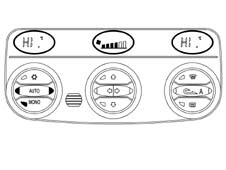
This request by the user, which is only accepted in MONO, forces the system into AUTO (AUTO LED on) and involves the following actions:
- Mixture flaps in full heat position.
- HEAT distribution
- Air flow rate at maximum value (seasonal)
- Compressor following logic
- Recirculation remains as requested by user.
In the HI condition, manual settings are allowed (and, obviously, the AUTO LED goes out) and the exit from the MONO condition determines the exit from the HI function and the setting of the temperture in both zones at 32.5° C.
If the driver turns the temperature setting this affects the passenger setting taking out of HI at 32.5 ° C.
If the passenger turns the temperature setting then this also alters the driver's setting, taking it out of HI (at 32.5 ° C) and then they can only alter their own setting when the system is in the DuaI Zone setting.
Low condition (lo)
The LO condition, or maximum cooling, is achieved by setting a Tequiv. set by the user below 16.5 ° C.
This request by the user, which is only accepted in MONO, forces the system into AUTO (AUTO LED on) and involves the following actions:
- Mixture flap in full cooling position.
- Distribution ni VENT
- Air flow rate at maximum value (seasonal)
- Compressor enabled
- Recirculation remains as requested by user. If the request is Automatic, the flap is forced shut when the passenger compartment Temp. <T ext. It returns to the normal Automatic logic on exit from LO.
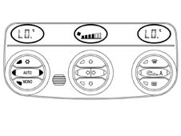
In the LO condition, manual settings are allowed (and, obviously, the AUTO LED goes out) and the exit from the MONO condition determines the exit from the LO function and the setting of the temperature for both zones at 16.5° C.
If the driver rotates the temperature setting it moves the passenger adjustment (setting) outside of LO, to 16.5 ° C.
If the passenger changes the temperature setting the driver's setting also moves outside of LO (at 16.5 ° C) and then the setting can only be changed with the system in the DuaI Zone setting.
The flashing logic is valid if the Compressor is disabled after the LO request and the Recirculation is forced to Automatic, if it was not already.
Air distribution buttons
There are 5 air distribution positions: VENT, BILEVEL, FLOOR HEAT and DEF.
In automatic mode the system controls the distribution direction and displays the choice with the appropriate LEDS on the control buttons coming on.
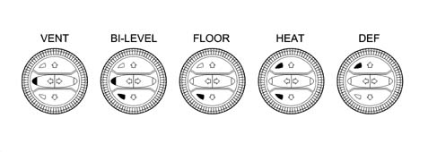
One of the 5 positions can be selected manually by operating the appropriate buttons according to the following combination logic
Main Distributions:
- DEF (hot/cold air or a mixture for defrosting)
- VENT (hot/cold ventilated air or front mixture)
- FLOOR (hot/cold air or mixture at the floor)
Combined Distributions:
- BILEVEL (hot/cold air or front/floor mixture).
- HEAT (heated air).
With the main distribution activated (one LED on), when the actual button is pressed, the distribution will be confirmed.
With the combined distribution activated (two LEDs on), pressing one of the two buttons will deliver the required distribution.
With the main distribution activated (one LED on), when a button is pressed which produced a combined distribution, there are 2 possibilities:
- pressing briefly results in combined distribution
- pressing at length results in main distribution.
Recirculation button
Pressing the recirculation button determines three possible types of operation, in order, according to the following logic:
- 1. automatic recirculation (amber LED on)
- 2. forced recirculation closed or on (passenger compartment inside air, orange LED on).
- 3. forced recirculation open or off (passenger compartment outside air, orange LED off - amber LED off).
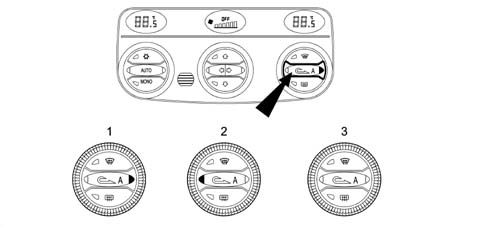
AUTOMATIC OPERATION
In Automatic mode the amber LED remains on at icon 'A' to signal automatic operation, whilst the orange LED remains off.
The recirculation is managed automatically (opening/closing) depending on both the quality of the intake air and the thermal adjustment changes.
The 'Intake air quality' sensor determines the requests for closing the recirculation flap when the concentration of harmful gases exceeds dangerous levels.
When the recirculation is on and operated automatically, there is a timed reopening to allow the exchange of air inside the passenger compartment (as soon as the pollution sensor asks for the reopening of the recirculation, within a time memorized, the control unit controls the opening of the flap for one minute).
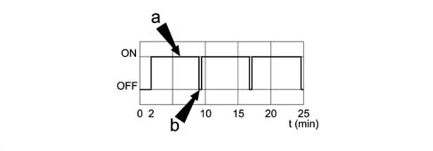
a, Recirculation on b, Recirculation off
FORCED RECIRCULATION CLOSED OR ON (PASSENGER COMPARTMENT INSIDE AIR)
In this type of manual operation, signalled by the amber LED being off, the orange LED coming on signals the closing of the recirculation flap.
FORCED RECIRCULATION OPEN OR OFF (PASSENGER COMPARTMENT OUTSIDE AIR)
In this type of manual operation, signalled by the amber LED being off, the orange LED going out signals the forced opening of the outside air flap.
FORCED RECIRCULATION CLOSED OR ON (PASSENGER COMPARTMENT INSIDE AIR) WITH VEHICLE STATIONARY
In Automatic mode, to prevent the intake of air into the passenger compartment which is polluted by the exhaust gases when the vehicle is stationary, when the speed of the vehicle is approaching zero (6 km/h), the system controls the closing of the recirculation. When the speed of the vehicle increases again to above 12 km/h, the system restores the pre-existing automatic mode conditions.
Fan speed control knob
The air flow rate can be manually adjusted in steps, with one bar on the display representing 3 steps, up to a maximum of 6 bars and then it switches off. If there have been no manual interventions, the fan speed is continuously controlled in automatic mode and the appropriate number of bars light up on the display depending on the flow rate.
The control unit is capable of regulating the air flow rate according to the outside temperature. The temperature bands are: outside temperature < 15° C; from 15° C to 25° C and > 25° C.
Manual intervention on the fan control results in the exit from the AUTO condition.
In particular, to increase or decrease the fan speed, turn the centre knob in a clockwise or anti-clockwise direction, respectively.
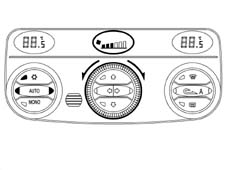
With the ignition key in the ON position, if the control unit is controlling the air flow rate in Automatic mode, then this air flow rate is at 1 bar (minimum flow rate) until the engine is started up (it is not ventilated at 1 bar if the body computer signals problems with the battery).
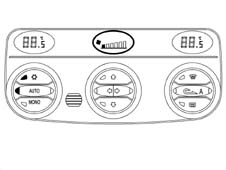
If the compressor is disabled, the ventilation control can be adjusted manually until the display shows 0 bars and 0% of Qmax.
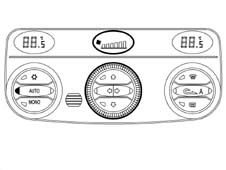
If the compressor is enabled and the engine is started up, the manual ventilation cannot go below 1 bar shown on the display and consequently below 20% of Qmax, because, with the compressor enabled, there must be a minimum air flow rate to prevent the evaporator from freezing.
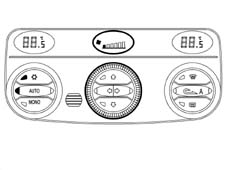
Max def button
The MAX DEF procedure manages the flow rate and the distribution of the air with the aim of demisting the windows as quickly as possible.
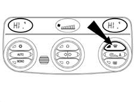
When the MAX DEF button is pressed, the system carries out the following operations:
- MAX DEF LED comes on
- Memorizing the functional state and MAX DEF previous displayes
- Switching off of right LED, AUTO button and automatic recirculation (if on)
- Switching on of LEDs for DEF distribution, Compressor enabling, MONO, HEATED REAR WNIDSCREEN, electric door mirrors and jets, with PTC resistance
- Temperature display on fully hot (HI) on both side displays
- Ventilation on centre display.
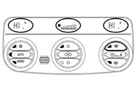
In addition, the activation of the following commands:
- Air flow rate at 65% of max. flow rate
- Distribution flap in Def position (before Mix implementation)
- Mixture flaps in Max Heat position (after implementation of Def)
- Forced air intake flap open (dynamic)
- Compressor function enabled
- AQS disabled (if fitted)
- Rear windscreen defrosting
During the operation of the MAX-DEF it is possible to:
- alter the air flow rate (increase/decrease) at will
- deactivate the heated rear windscreen
It is not possible to:
- Alter the temperature setting (driver/passenger)
- Alter the distribution setting.
It is possible to interrupt the MAX-DEF function by operating any of the climate control buttons (Recirculation, Compressor Enabling, Auto, Mono, MAX-DEF) implementing the return to the previous condition MAX DEF condition and implementing the command for the button pressed.
The management of the MAX-DEF procedure takes precedence over the management of the following procedures:
- LO (maximum cold)
- HI (maximum heat)
Their execution, if in progress, is interrupted if the MAX-DEF procedure is activated.
Heated rear windscreen
The rear defrosting is implemented both through the special button and through the MAX DEF procedure.
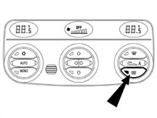
The display of the function state is shown by the LED coming on/going off.
The function requesting the activation of the heated rear windscreen is only subordinate to the key on. The HEATED REAR WINDSCREEN function is not memorized with the ignition switched OFF.
Multi-purpose buttons
These are the MONO, Recirculation and Compressor Enabling buttons.
All the other buttons, such as the reset, are managed normally.
The function is enabled after the button has been pressed for 50 msec. The pressing of a button is only recognized after the previous button has been released.
There is a buzzer in the NQS (instrument panel connector) which produces the following auditory signals:
- signal for various alarms
- feeback signals, also known as roger beeps (signal received), when a button in the passenger compartment is pressed.
Mode function (shift from degrees centigrade to degrees fahrenheit)
This can be activated by three buttons in the dashboard, on the left hand side, near the front air vent.
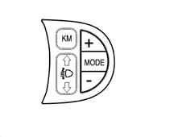
+ button:
- designed to move the cursor upwards in the display.
Mode button:
- designed to access the mode function and confirm the choices selected:
- button:
- designed to move the cursor downwards on the display.
Example:
Press mode once.
Access to the selection screen:
With the + or - button you can move up or down.
Press MODE:
- LIGHTING
- SERVICE
- SPEED
- TIME DATE
- RADIO
- TELEPHONE
- NAVIGATION
- BUZZER (1)
- LANGUAGES
- UNIT (2)
- MENU OFF
To select BUZZER (1) or UNIT (2)
1) Press mode-buzzer-mode again
The word buzzer appears and graphics with the words off,/min max underneath with the +/- buttons used to adjust the intensity of the buzzer.
Press the mode button to return to the main screen.
2) Press: mode-unit-mode again and select the options described below:
The following appears:
- KM ° C
- ML ° C
- KM °F
- ML °F
The +/- buttons are used to select the units of measurement.
Press the mode button to return to the main screen.
CLIMATE CONTROL SENSORS
Outside air temperature sensor
The NTC sensor is fitted on the door mirror and has an operating range of between -40° C and 80° C
The system checks the sensor and updates the value in the following conditions:
- temperature measured higher than that memorized: the update only takes place if the speed of the vehicle is equal to or above 30 Km/h and the increase in temperature is measured for more than a minute
- temperature measured equal to or below that memorized: the system updates the value of the outside temperature
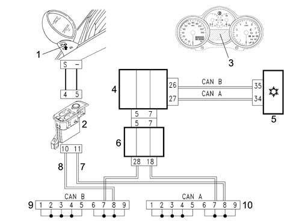
1 - Outside air temperature sensor 2 - Driver's door connector NPG 3 - NQS instrument panel connector (outside temperature display) 4 - NBC body computer connector 5 - NCL climate control connector or electronic control unit 6 - Dashboard control unit 7 - CAN A line 8 - CAN B line 9 - CAN B line multiple connector 10 - CAN A line multiple connector
The outside temperature reading is supplied:
- basic version (low) in the NQS display
- plus version (high) at the NQS points matrix.
The NQS instrument panel receives information, via the CAN line, in degrees centigrade with an accuracy of 0.5 degrees centigrade.
(NBC) The body computer connector, receives the following information, via the CAN network, in addition to the value of the outside temperature sent to the climate control unit (NCL):
- coolant temperature
- engine rpm
- vehicle speed (speedometer signal)
- battery voltage (battery state of charge).
Treated air temperature sensors
There are four treated air temperature sensors.
Two are positioned in the duct which directs the air to the lower (floor) vents and the other two are near the centre vents (vent).
They are NTC sensors (where the resistance decreases as the temperature increases) with an operating range of -40° C to 100° C, accuracy 0.5 ° C, Resistance at 25° C: 10Kohm ± 5%.
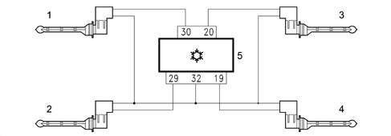
In the centre of the unit to the side of the rear vnt
1 - Left vent treated air sensor
2 - Right vent treated air sensor
Feet side
3 - Left floor treated air sensor
4 - Right floor treated air sensor
5 - Climate control connector or electronic unit NCL
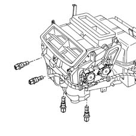
Passenger compartment inside air temperature sensor
This is an NTC sensor incorporated in the climate control unit, resistance at 25° C: 10Kohm ± 5%, operating range -40° C +100° C.
The sensor is ventilated; in effect, it incorporates a small, brushless type fan with 6 vanes with a rotation speed of 3600 ± 600 rpm and an air supply > 2.0 m/s.
The latter is always supplied so that the temperature reading is not affected by the hot air inside the dashboard.
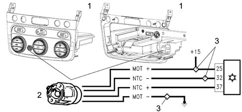
1 - Climate control unit connector NCL (front/rear view) 2 - Passenger compartment air sensor (NTC/fan) 3 - Ultrasound welding connectors (earth/positive). The positive controlled by the ignition comes from the engine compartment control unit.
Solar sensor
The solar radiation sensor is positioned on the facia near the windscreen.
It is the DUAL ZONE type for the optimum control of the dual climate control system temperatures.
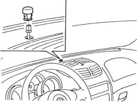
The task of this sensor is to convert light signals (lux or kcal/m2h) into a proportional electrical linear signal. The sensor is a specific type of diode (photodiode) that can alter its rate of conduction according to the amount of light that strikes it; in practice, the light that strikes the lens of the photodiodes releases electrons from the crystal grating.
A superabundance of electrons and gaps therefore appear.
The electrons flow toward the photodiode spatial charge or junction area (NP) and increase junction current (photoelectric current) in proportion with light intensity. In order to achieve a very high response rate, the photodiode is fitted with a lens designed to focus light more effectively on the photodiode semiconductor junction (N-P).
Using this signal, the control unit (NCL) varies the temperature parameters decreasing it, acting on the air distribution at the same time.
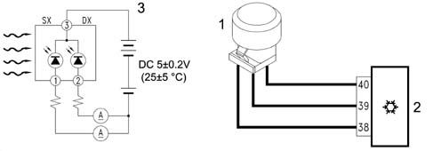
1 - Dual zone solar sensor 2 - Climate control unit connector NCL Pin 38: +5V Pin 39: right Pin 40: left 3 - Signal wiring diagram
Pollution sensor (a.q.s.)
The pollution sensor is an electronic device which is designed to supply an enabling signal for the recirculation flap when the air pollution index exceeds the pre-set level, to prevent the introduction of polluted air into the passenger compartment. On return to normal conditions, the NCL restores the recirculation to the position prior to the activation of the function.
It is fitted in the dynamic air intake compartment under the windscreen.
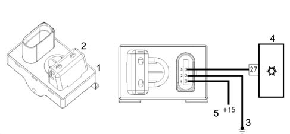
1 - Pollution sensor 2 - Sensitive element area 3 - Left front earth connector 4 - NCL climate control connector 5 - Positive controlled by the ignition coming from the engine compartment control unit
The AQS sensor is an integrated system complete with sensitive element, processor and output interface.
By using a special sensitive element it is possible to detect the presence, in the air around the vehicle, of harmful oxidizing particles (e.g. CO) or reducing particles (e.g. NOx).
The sensitivity of the system is optimum for the potential danger of pollutant gases according to the M.A.K. index (maximal concentration of harmful substances at work at an exposition of over 8 hours). The sensitive element is heated and regulated at a constant temperature of 300° C to provide the same performance in an ambient temperature range of between -25° C and 85° C. It is not affected by the speed and the temperature of the air passing through.
The sensor produces a PWM signal within around 40 secs from the initial time of supply.
If the sensor has not been used for a long time, its response time varies as described below.
Time not used | Response time |
|---|---|
<24h | max 1 sec |
24h<t<76h | max 30 sec |
76hh<t<480h | max 180 sec |
>480 sec | max 300 sec |
To check the sensor it is necessary to:
- turn the ignition ON
- wait for 36 s for the sensor to warm up
- within 120 s, inject pollutant gas from the canister into the sensor (part. N° 71715571)
- check that the outcome of the test is positive using the diagnostic equipment both to check the efficiency of the sensor and the closing of the recirculation flap.
Misting sensor
The misting sensor is a device which operates without contact, using electronic and optic technology to detect the presence of droplets of water (misting) on the inner surface of the windscreen or the rearscreen of a vehicle. The information coming from the misting sensor is sent to the vehicle's climate control system to provide the demisting strategy.
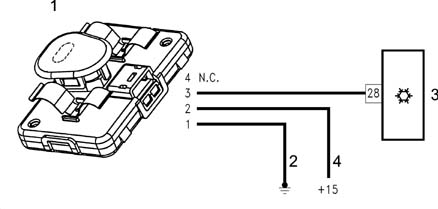
1 - Misting sensor 2 - Rear earth connector on tunnel 3 - Climate control connector NCL 4 - Positive controlled by ignition coming from dashboard control unit
The electrical connection comprises a 4 pin connector where 3 pins are used for +12V, earth and PWM (Pulse Width Modulation), respectively.
The sensor casing is made from high resistance polypropylene; since it works without contact it is fitted on the mounting bracket for the rear view mirror in such a position that it does not affect the driver's vision, not only for aesthetic reasons, but also so that it is not exposed to direct sunlight as the UV rays could damage it.
The only part of the sensor that is visible is the frame (a rapid attachment cover which acts as an optic lens and an aesthetic cover for the sensor) which conducts the infrared rays to the measuring surface and collect the energy reflected. This frame is usually dark red and looks almost black. In practice, this sensor (equipped with photodiodes) is capable of transforming the light signals into a proportional electrical signal which is sent to the control unit (NCL).
Using this signal, the control unit varies the parameters of the output air temperature, increasing it and altering the distribution and the speed of the actual air.
Sensor specifications
Sensor specifications are as follows:
- The sensor is activated at operating voltages between 10 and 16V.
- The operating temperature is between -20° C and 70° C.
- The sensor is capable of working in an ambient where the humidity is 95%.
- It is able to withstand a high level of vibrations without its performance being affected thanks to the type of fastening with a special algorhythm in its software.
- It can normally work up to an altitude of 3500 m and can withstand falls from a height of 1 m from the ground without suffering damage and with its performance unaffected and has been designed to prevent the entry of dust. Removing a layer of dust does not alter the calibration or adversely affect performance.
Performance
The misting sensor gathers information concerning the degree of misting on the surface of the windscreen glass. The sensor transmits the information acquired to the climate control system control unit via a dedicated line through a 'PWM' type digital signal.
The signal transmitted includes information on both the degree of misting and correct operation (diagnostic information).
The information is updated/transmitted every 80ms.
Maintenance
The sensor does not require any maintenance except for the regular cleaning of the lens cover (or frame). It may be necessary to clean the lens cover when there is a large build up of dirt or impurities on the lens which prevent the reception and transmission of an acceptable quantity of light. The lens should be cleaned using a weak solution of soap and water.
ACTUATORS
Stepping motors
The rotor which includes a certain number of pairs of permanent polymagnets, is in a rest position (minimum magnetic energy) due to the polar configuration imposed by the outside of the electro-magnetically energized stator.
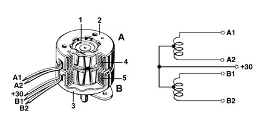
1 - Rotor 2 - Stator A casing 3 - Stator B casing 4 - Winding A 5 - Winding B
If the reversal of polarity of the energizing windings is carried out correctly by the digitally controlled orders, the rotor turns exactly one step in the direction selected and moves into a new rest position.
In this case the energizing current is independent from the load and if it is applied with a rapid sequence of pulses (frequency) the stepping movement is transformed into a practically continuous movement.
As with direct current geared motors, the polarity of the stator windings is correctly reversed by means of switches which are formed by electronic power stages in the control unit.
The number of steps for each rotation results from the number of polar pairs (P) of the rotor and the number of phases (m) for the stator.
The typical positioning accuracty for these geared motors is about ± 5% of the stepping angle and is mainly not connected to the total of positioning steps i.e. the positioning angle. The angular increments (usually > 1.8°) can vary according to the task that the geared motor has to perform. These types of geared motor are widely used in new systems.
Air mixture flap actuators
The temperature of the treated air is adjusted through the temperature setting knobs.
The actuators rotate the mixture flaps according to the control unit command.
A motor with a 12 volt supply controls the rotary movement of a drive pin which acts directly on the mixture flaps.
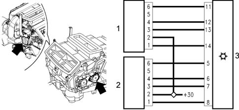
1 - Right air mixture actuator 2 - Left air mixture actuator 3 - Climate control connector NCL. The +30 coming from the body computer connector NBC (from the ultrasound welding connector)
RIGHT AIR MIXTURE ACTUATOR PIN-OUT
- 1 Coil A1
- 2 +30
- 3 Coil A2
- 4 Coil B1
- 5 n.c.
- 6 Coil B2
LEFT AIR MIXTURE ACTUATOR PIN-OUT:
- 1 Coil A1
- 2 +30
- 3 Coil A2
- 4 Coil B1
- 5 n.c.
- 6 Coil B2
SPECIFICATIONS:
- nominal voltage 12V
- nominal operating frequency 200 Hz
- nominal speed 1.67 RPM
- steps per revolution 7200 (7200 impulses for 1 revolution)
- reduction ratio 300
- coil resistance 84 ohm
Air distribution actuator
The actuator moves via a rack slide, with guiding splines which contain the bearings and two levers; there are 5 possible positions for the distribution flaps:
Main: DEF, VENT, FLOOR
Combined: BILEVEL, HEAT.
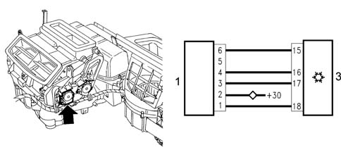
1 - Air distribution actuator 2 - Climate control connector NCL The +30 coming from the body computer connector (ultrasound welding connector)
AIR DISTRIBUTION ACTUATOR PIN-OUT
- 1 Coil A1
- 2 +30
- 3 Coil A2
- 4 Coil B1
- 5 n.c.
- 6 Coil B2
SPECIFICATIONS:
- nominal voltage 12V
- nominal operating frequency 200 Hz
- nominal speed 5 RPM
- steps per revolution 2400 (2400 impulses per rev)
- reduction ratio 100
- coil resistance 70 ohm
Recirulation actuator
The recirculation actuator rotates the flap in the two dynamic air and recirculation extreme positions wihout intermediate positions.
A motor with a 12 V supply controls the rotary movement of a drive pin which acts directly on the flap. Reversing the polarity produces movement in the opposite direction
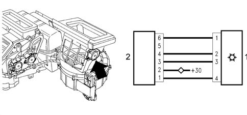
1 - Climate control connector NCL 2 - Recirculation actuator The +30 coming from the body computer connector NBC (from the ultrasound welding connector)
CLIMATE CONTROL CONNECTOR NCL PIN-OUT
- 1 Coil A1
- 2 +30
- 3 Coil A2
- 4 Coil B1
- 5 n.c.
- 6 Coil B2
SPECIFICATIONS:
- nominal voltage 12V
- nominal operating frequency 200 Hz
- nominal speed 5 RPM
- steps per revolution 2400
- reduction ratio 100
- coil resistance 70 ohm
The closing of the flap takes place in < 2.5 secs
The feedback check on all mixture, distribution and recirculation motors.
This iis carried out by measuring the difference in the current absorbed by the coils supplied to identify a loss in steps corresponding to a mechanical failure or sticking.
SYSTEM COMPONENTS WHICH INTERACT WITH THE CONTROL UNIT
The electronic control unit manages the automatic operation of the system controlling the thermodynamic parameters to provide the climate comfort desired by the occupants of the vehicle.
The specifications of the climate control are shown in the block diagram below.
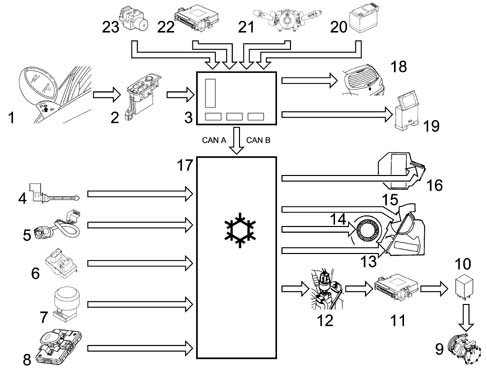
1 - Outside air temperature sensor 2 - Driver's door connector NPG 3 - Body computer connector NBC Signals at CAN A CAN B network 4 - Treated or mixed air sensor. 2 at the upper centre vents; 2 at the lower vents 5 - Interior air sensor 6 - Pollution sensor 7 - Solar sensor 8 - Misting sensor 9 - Compressor 10 - Compressore relay feed 11 - I.E. engine management control unit connector NCM 12 - 4 stage pressure switch 13 - Left-right mixture flap actuators 14 - Interior fan 15 - Distribution flaps actuator 16 - Recirculation flap actuator 17 - Climate control connector or electronic control unit NCL 18 - Heated rear windscreen 19 - Diagnostic equipment (Examiner) 20 - Battery. Signal at CAN network state of charge voltage 21 - Windscreen washer signal at CAN network 22 - NCM signal at engine coolant temperature CAN network 23 - ABS braking system connector NFR signal at vehicle speed CAN network
OPERATING LOGICS
The controls for the climate control/automatic heater operation are positioned on the electronic control unit user interface.
The system is equipped with a split system and the control unit controls the temperature on both the driver and passenger sides, heating or cooling the air introduced into the passenger compartment so that it reaches the temperature desired by the user.
When the system is switched on the various parameters are checked manually or automatically depending on the selections made by the user before it was switched off.
All the manual interventions made before the engine was switched off are stored in the memory until the next time the engine is started up.
This is also valid for the OFF condition; if it was switched off before the engine was switched off then the system will still be switched OFF when the engine is started up.
If at the previous key off the Max Def function was on, then at the key on the condition memorized before the Max Def condition is implemented.
Each time the battery is connected, the passenger compartment temperature display automatically shows 24 ° Χ.
The users can alter the temperature setting using the appropriate knobs (driver/passenger). Turning the knobs in a clockwise direction increases the temperature set, whilst turning them in an anti-clockwise direction decreases the temperature set.
The increases/decreases are in 0.5 ° Χ στεπσ ανδ ονε χομπλετε ρεϖολυτιον οφ τηε κνοβ προδυχεσ 24 στεπσ.
The maximum permissible difference between the selections made by the driver and the passernger is 7° Χ.
Turning the knob until the above mentioned difference is reached, the system moves the current setting of the stationary knob, maintaining the above mentioned difference between the two zones (neither knob takes precedence).
The temperature range goes from 16.5 to 32.5 ° Χ; βελοω 16.5 ° Χ τηε ϖαλυε σετ βεχομεσ 'LO', whilst above 32.5 ° Χ τηε ϖαλυε σετ βεχοεμσ 'HI' therefore further reductions in the 1st case or increases in the 2nd case have no effect on the temperature set.
When the control unit is switched off, the temperature setting, shown on the display, is stored in the memory and renewed at the next key on.
If the user selects a temperature setting lower than the outside temperature, with the compressor button disabled, the system is not capable of reaching it or maintaining it and signals this impossibility by the Equivalent Temperture Setting flashing.
The dual buttons are Mono, Recirculation and the Compressor enabling button.
All the other buttons are managed normally or like Reset.
The function is enabled after the button is pressed (50 msec). Pressing the button is only recognized after the previous button has been released (50 msec). When the buttons are pressed there is a feedback sound (roger beep) from the Instrument Panel buzzer.
Winter starting transition
Only if the temperature of the coolant is below a certain level (20 degrees C), the temperature of the passenger compartment is below that requested and the outside temperature is below 20 degrees C does the automatic mode carry out the winter starting procedure.
With the ignition switched ON the system reads the temperature of the coolant and, until the latter has reached about 50 degrees C, it sets a minimum air flow rate with the distribution in the defroster position and the mixture flap in automatic mode.
In addition, the recirculation is switched off and the compressor is subject to the operating strategy depending on the outside temperature. It is therefore possible to automatically engage the compressor to dehumidify the air. If a different configuration is manually selected, it is implemented and signalled with priority. The escape from the winter starting transition takes place when the temperature of the coolant reaches 50 degrees C or when the temperature set is equal to that of the passenger compartment.
The compressor is enabled for activation in the following cases:
- in manual mode: when the user controls the enablement manually
- in automatic mode: when the management of the maximum cold procedure (LO state) is activated and when the maximum demisting procedure (MAX DEF) is activated
In any case, when the system forces an enablement or disablement state for the compressor, the previous state is memorized. When the conditions which have caused the forcing no longer exist, the previous state is restore, unless, in the meantime, the user has intervened manually on the compressor enablement/disablement state. In the last case, the manual operation has priority and cancels the forced operation by the system.
The compressor can also be switched off by the intervention of the four stage pressure switch or by the engine control unit.
CLIMATE CONTROL FLUID-DYNAMIC CIRCUIT
The system operates according to a common refrigerant cycle with FREON R134a fluid where all the changes of state (from liquid to gas and viceversa) are exploited to absorb and give off heat.
The operation of the system takes place at two pressure levels: the high pressure is maintained by the compressor, the low pressure by the expansion valve.
The refrigerant fluid comes out of the compressor in the form of gas at a high pressure and high temperature. it then enters the condenser, where it is cooled and comes out in a liquid state.
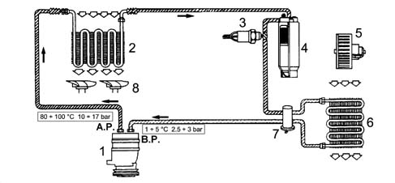
1 - Compressor 2 - Condenser 3 - 4 stage pressure switch 4 - Drier filter 5 - Evaporator cooling fan 6 - Evaporator 7 - Expansion valve 8 - Condenser cooling fan BP - Low pressure AP - High pressure
The fluid passes through the drier filter and enters the expansion valve where the pressure and consequently the temperature decreases.
The fluid, still in a liquid state, enters the evaporator: evaporation removes heat from the air which enters the passenger compartment. In addition, when this air comes into contact with the cold walls of the evaporator it loses a high percentage of humidity and therefore enters the vehicle colder and less humid. Lastly, the fluid returns to the compressor and the cycle begins again.
SANDEN SDV16BA TYPE COMPRESSOR (ALL ENGINE TYPES)
The compressor fitted on all versions is the variable capacity SANDEN SD7V16 type.
The compressor varies its capacity starting from the maximum value (161.3 cm3/rev) which is gradually reduced (down to 10.4 cm3/rev) following the variations in the system load conditions - changed outside temperature and/or humidity conditions or sharp variations in engine load.
This solution is, in effect, defined as 'unlimited variable capacity'.
The compressor is the alternating piston type: the variation in the capacity is achieved by titling the connecting rod holder plate with a consequent variation in the piston stroke: the movement of the plate is activated by an internal adjustment valve according to the balance of pressure upstream and downstream of the compressor.
In particular, a low inlet pressure involves the shuttering of the compressor (reduced capacity), whilst a high pressure involves operation at maximum power (maximum capacity).
The main specifications of the compressor are:
- Direction of rotation: clockwise
- Number of continuous revs: 7000
- Max. no. of revs: 8000
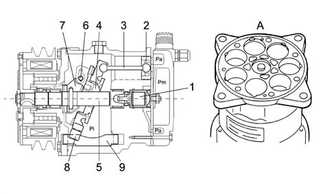
1 - Diaphragm valve 2 - Pistons 3 - Connecting rods 4 - Connecting rod holder plate 5 - Shaft 6 - Pin 7 - Arm 8 - Slide 9 - Guide A - Compressor casing without valve plate
The SD7V16 compressor is shown schematically in the figure below: it consists of seven pistons (2) with connecting rods (3) fastened to connecting rod carrier plate (4). The rotary motion of the plate (4), fitted on the shaft (5) provides the alternating movement to the pistons.
A different tilt of the plate allows the capacity to be varied: maximum tilt (as in the figure) for maximum capacity; tilt at zero limit (vertical position) for minimum capacity, almost zero.
The rotation of the plate (4) takes place around the pin (6) hinged on the shaft (5) arm (7).
The movement of the plate (4) in relation to the shaft (5) takes place through suitable splining in a low resistance material.
The plate (4) slides underneath on a guide (9) through a slide (8) made from a low friction material.
The diaphragm valve (1) controls the flow rate according to the difference between the Pa (inlet pressure) and the Pi (pressure inside the compressor).
Pa, inlet pressure
Pi, pressure inside the compressor
Pm, supply pressure.
Quantity of oil and fluid for the climate control system
With the introduction of HFC 134a (Hydrofluorocarbon) refrigerant, the traditional mineral oils used in climate control systems in previous years which are not soluble in R134a should no longer be used, but taking their place are special synthetic type oils which can be mixed in this fluid, namely: P.A.G. (Polyalkaligycols).
These are oils obtained by atomizing alcohol with ethylene and propylene oxides. Since these oils are extremely hygroscopic, the containers they are stored in and the compressors should be well sealed to prevent oxidation with the humidity in the air; never use engine oils in their place.
Since the oil should circulate by being moved through the entire A/C system by the refrigerant fluid, in order to be able to lubricate the expansion seal and the seals for the connectors and lastly return to the compressor, the main feature of the oil should be its ability to dissolve in the refrigerant fluid.
The compressor is available as spares pressurized with nitrogen to prevent the entry of humidity or impurities; therefore when fitting the plugs for the inlet and outlet connectors have to be removed slowly with the compressor straight.
If the compressor is being replaced, proceed as follows:
- 1) Pour the quantity of oil present in the old compressor into a graduated test tube (C) taking care to let the contents drain well.
- 2) Pour the oil from the new compressor into a graduated test tube (D) taking care to let it drain well.
- 3) Remove the excess amount of oil (A) corresponding to the difference between the quantity of oil in test tube (C) and test tube (B) (A=B-C).
- 4) Introduce the amount of oil remaining in test tube (D) into the new compressor.
- 5) Quickly seal the P.A.G. oil container after use as it absorbs humidity easily.
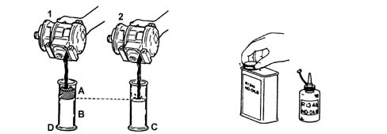
1 - New compressor 2 - Replaced compressor
Topping up with oil if components are replaced
A certain amount of oil circulates together with the refrigerant fluid, therefore if components are replaced the quantity of oil in the system must be renewed:
- if the condenser is replaced, add 40 cc of oil;
- if the evaporator is replaced, add 40 cc of oil;
- if the drier filter is replaced, add 15 cc of oil;
- if a pipe is replaced, add 5 cm3 of oil for each metre of pipe.
There should be no confustion between the type of oil used in systems which run on Freon 12 or R12 refrigerant and the type of oil used in systems running on R134a refrigerant.
The level of the oil in the compressor does not need to be checked unless there are leaks or breaks in the pipes or one of the components has been replaced.
It should be remembered that with the circuit not working and the outside temperature at 20 - 25 ° C the pressure in the entire circuit should be 5 - 6 bar, which means that when the level of the oil has to be checked the system should be drained to prevent a jet of oil and refrigerant gushing out.
The following table summarizes the types and the quantities of oil and refrigerant fluid.
Engine | Compressor | Type of oil | Quantity of oil (cm3) | Quantity of R134a gas (g) |
|---|---|---|---|---|
ALL TYPES | SD 7V16 BA | SP10 | 135 | 550 ± 25 |
CONDENSER
The condenser is a heat exchanger located in front of the engine cooling radiator.
The refrigerant fluid, in a gaseous state, passes through the condenser coils and liquifies (at an average temperature of 60° C).
The outside of the condenser comes into contact with the air produced by the vehicle moving forwards.
When the vehicle is stationary or driving in traffic, the air is produced by the same fan used by the engine radiator.
An insufficient heat exchange in the condenser increases the pressure in the system and causes the incomplete condensation of the fluid with a considerable reduction in the efficiency of the system.
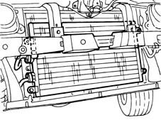
DRIER FILTER
The drier filter is connected by a pipe to the evaporator inlet duct and filters the refrigerant fluid usually in a gaseous state but partly also in a liquid state, plus the lubricant oil/anti-freeze.
Any small impurities which could obstruct the expansion valve are retained by two filter layers. The water retention is guaranteed by molecular sieves or a chemical compound (silicagel). For this reason all the system components must be stored in a dry place with the connectors sealed until the time of fitting.
In the lower part of the pipe, which is positioned inside the accumulator and is contact with the outlet connector, there is an opening to ensure the return of the lubricant oil to the compressor. There is also a metal gauze filter by the oil port.
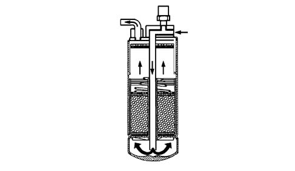
ELECTRO-MAGNET COUPLING OR PULLEY
The compressors used in air conditioning systems fitted to vehicles are equipped with a special device, known as an electro-magnet coupling, which joins the compressor to the engine. In this way the coupling transmits the power, by means of suitable belts, usually with trapezoid sections, from the engine drive pulley to the compressor.
When the air conditioning system is not working, the pulley freewheels on the bearing, since it always rotates, driven by the pulley on the crankshaft pulley via a trapezoid belt; the compressor, on the other hand, is connected to the hub.
When the air conditioning system is switched on, a magnetic field is created as a result of the circulation of the current in the electro-magnet. The force, produced by the latter, ensures that the electro-magnet attracts the disc on the pulley which is then connected to the compressor shaft.
The latter is, therefore, made to rotate.
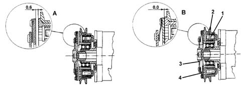
1 - Magnetic oil 2 - Pulley 3 - Front disc 4 - Spring A) Rest fitting position B) Working position for the same disc
Wiring diagram for pulley electro-magnet with diode parallel to coil to reduce electro-magnetic interference created.
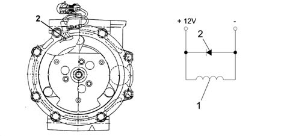
1 - Electro-magnet 2 - Diode
The pulley always rotates (connected to the compressor shaft through a coupling) driven by the belt.
When the electro-manget is de-energized, the disc is about 0.6 - 0.8 mm from the pulley and therefore there is no movement transmitted from the pulley to the compressor. When the electro-magnet (1) is supplied, the disc is attracted to the pulley, overcoming the force of an opposing spring.
MULTI-STAGE PRESSURE SWITCH (4 STAGE)
Located on the drier filter high pressure intake pipe.
1 - 4 stage pressure switch 2 - Front power earth right 3 - Climate control connector NCL; pin 5 compressor enabling 4 - Engine management connector (IE) NCM 5 - Pins 9-50 low fan speed enabling 6 - Pins 6-13 compressor enabling 7 - Pins 41-62 high fan speed enabling
This is a 4 stage pressure switch which controls the safe and correct operation of the system.
The 4 pressure stages allow the compressor and the cooling fan to be switched on/off:
- 1st stage (about 2.5 bar): minimum pressure allowing the compressor to be switched on
- 2nd stage (about 15 bar): pressure which requires the first fan speed to be switched on
- 3rd stage (about 20 bar): pressure which requires the second fan speed to be switched on
- 4th stage (about 28 bar): maximum pressure which deactivates the compressor.
EXPANSION VALVE
The thermostatic expansion valve is fitted on the evaporator inlet and outlet ducts has the task of regulating the flow and expasion (fall in pressure) of the R134a fluid before it enters the evaporator.
1 - Sensitive bulb 2 - Passage 3 - Spring 4 - Shutter 5 - Adjustment screw 6 - Evaporator inlet 7 - Evaporator outlet 8 - To the compressor low pressure circuit 9 - From the filter high pressure circuit
The functions of this sophisticated meter which regulates the flow of refrigerant are as follows:
- To meter the flow rate according to the load;
- To analyze the evaporation temperature;
- To stabilize the evaporation pressure;
- To control the overheating of the refrigerant fluid.
The automatic regulation of the passage section for the refrigerant fluid inside the expansion valve is carried out by a sensitive bulb which is affected by the temperature of the coolant. According to the latter, it regulates the size of the opening acting on a spring which moves the shutter and determines the extent of the expansion.
The increase in temperature at the evaporator outlet, measured by the bulb, causes the opening of the valve with a consequent increase in the flow rate of the fluid to the evaporator.
Conversely, at low temperatures, the flow rate is decreased.
EVAPORATOR
The evaporator is a heat exchanger fitted inside the blower/distributor unit. It consists of an aluminium structure with fins which increase the heat exchange surface.
The evaporator is smaller than the condenser.
The refrigerant in the evaporator changes from a liquid state to vapour which is slightly overheated.
This change in state is produced by directing the hot, humid air which needs to be treated onto the evaporator using fan. As the temperature of the air is higher than that of the refrigerant, it gives off some of its heat; on cooling, the humidity contained condenses on the evaporator fins in the form of droplets.
They are collected in a chamber and discharged. This produces cool, dehumidified air.
The serious cooling of the radiant group is due to the change in state, from liquid to gas, of the 134a; depending on the refrigerant used, this change takes place with a strong absorption of heat. The process takes place extremely quickly because the liquid is introduced into the coil atomized and at low pressure through the expansion valve jet.
It can therefore evaporate very rapidly along the coil, absorbing a considerable amount of heat.
If the evaporator coils are not supplied with sufficient refrigerant, the evaporation is limited; in this case, operation would be poor with an insufficient heat exchange.
In the opposite case, if the supply to the evaporator coils is too large, the evaporation of the coolant in the coils would be incomplete. In this case, the coolant might return to the compressor, in a liquid state, which would damage the compressor pistons and the valves. In addition, under these circumstances, operation would be poor with insufficient heat exchange. Too high a pressure reading on the inlet pressure gauge or excessive oozing from the evaporator coils and the intake pipes, accompanied by poor evaporator cooling, indicate that the coil is receiving excessive refrigerant.
The evaporator can receive air from inside the vehicle (recirculation air) or from the outside, thereby producing an exchange of air inside the passenger compartment. The evaporator is chemically treated to be resistant to corrosion.
HEATER
This is a heat exchanger connected to the engine cooling circuit by means of special pipes: one draws hot water from the engine and allows the heating of the air introduced into the passenger compartment, the other allows the return of the coolant to the engine.
Applies to: engines: 1.9 JTD 8V; all production periods
ADDITIONAL HEATER P.T.C.
The additional PTC heater, available as an optional extra on the JTD versions, is designed to heat the passenger compartment more quickly wih the engine running (rpm > 700 rpm) in the case of adverse weather conditions (for example, particularly cold climate).
It is a resistance located near the radiant mass with a maximum power of 700 W and a voltage of 13.5 V.
The voltate at connector A determines 33% of the heater power.
The voltage at connectors B-C determines 66% of the heater power.
Thermal balance
Control of the PTC with progressive/regressive logic: (0%, 33%, 66%, 100%, 66%, 33%, 0%) taking into account both the Thermal Balance and the Electrical Balance as described below.
The logic involves activating/deactivating the relays according to the temperature of the H2O as indicated in the table below.
T H2O | %PTC |
|---|---|
> 64 ° C | 0 |
> 62 ° C and < 64 ° C | 33 |
> 60 ° C and < 62 ° C | 66 |
< 60° C | 100 |
Having completed the warming up according to the thermal balance table (T H2O > 64° C - PTC = 0%), if the temperature of the H2O goes below 64° C again, the PTC control logic is not reactivated until the next + KEY cycle = from ON to OFF and from OFF to ON.
Electrical balance
The PTC control should also take into account the supply voltage (measured at the control unit terminals) to establish the enabling percentage according to the electrical balance of the vehicle.
This check should use the data from the two tables for the first 120 secs operation of the PTC and remaining part of the check, respectively.
VBATT [V] | %PTC |
|---|---|
< 12.2 | 0 |
< 12.4 and > 12.2 | 33 |
< 12.6 and > 12.4 | 66 |
> 12.6 | 100 |
Table of first attempt relating to PTC load engagement percentage in the first 120 secs of the check depending on the battery voltage.
The difference between the figures in the two tables should be constant.
VBATT [V] | %PTC |
|---|---|
< 12.5 | 0 |
< 12.7 and >12.5 | 33 |
< 12.9 and > 12.7 | 66 |
> 12.9 | 100 |
The battery voltage which determines the changes in the PTC percentage should take into consideration the 'derivation' of the actual Vbatt; the average reading (10 values in 10 seconds) should be taken and then the average of these averages every 60 seconds.
Applies to: all engines; all production periods
INTERIOR FAN
The motor which sends outside or recirculation towards the evaoprator battery is an electric motor with permanent magnets of the same type used for the condenser fan but with a different (lower) electric power. It is located inside the casing, near the evaporator; it receives a 12 V supply and is operated at different speeds by an electronic governor located nearby.
The various operating speeds are necessary to activate the condensation of the refrigerant with a ventilation that would be imopssible to produce dynamically, especially with the vehicle stationary or in traffic.
1 - Fan speed electronic governor 2 - Electric fan
ELECTRONIC GOVERNOR
The different fan rotation speeds are controlled by an electronic governor fixed to the actual duct. Using P.W.M. (pulse width modulation) signals, pin 8 of the (NCL) control unit, at the governor electronic system input, the voltage and consequently the supply current for the motor are controlled with a consequent control of the speed of the fan and the cubic metres/hour of the air.
In addition, the governor processes a feedback signal with a frequency proportional to the rotation speed of the motor at pin 32 of the (NCL) control unit. It is used as a control signal for the rotation speed of the motor to diagnose increases in temperature due to current absorption or excessive mechanical resistance; in practice, any malfunctions.
A - Duty cycle signal 10% high low speed B - Duty cycle signal 50% high average speed C - Duty cycle signal 95% high high speed
POLLEN FILTER
It has been decided to fit a combined type air filter (PARTICLES+ ACTIVE CHARCOAL) for the passenger compartment on air conditioned vehicles to improve comfort. The former makes it possible to prevent the intake of pollen and pollutant particles into the passenger compartment; the latter reduces the tiresome sensation produced by unpleasant smelling substances due to dampness forming on the surfaces.
1 - Filter 2 - Cover
The main specifications of the filter element are:
- high filtering capacity: the filter retains more than 50% of particles with dimensions between 0.5 (1micron, above 80% between 1( 1.5 microns, around 98% with dimensions above 2 microns
- easy to replace.
CONTROL UNITS USED IN CLIMATE CONTROL SYSTEMS
The diagram shows the control units which may be used.
1 - Control unit for mono zone systems 2 - Control unit for dual zone systems 3 - OPT selection/Presence of winter pack 2 4 - Selection of degrees Celsius (° C) / Fahrenheit (°F)
There are 3 types of control units (NCL) on climate control systems: one for mono zone systems, also valid for left and right hand drive versions.
Two for dual zone systems. One valid for left hand drive systems, diesel and petrol vehicles with winter pack 2 fitted or OPT.
The other, for right hand drive versions, with winter pack 2 fitted or OPT.
On this control unit there is the possibility of changing from degrees Celsius (° Χ) to Fahrenheit (°Φ).
Winter pack 2 has the following sensors:
- a) misting sensor
- b) rain sensor
- c) pollution sensor (a.q.s.)
Each time a new control unit is fitted the learning test has to be carried out using the diagnostic equipment to personalize it through programming.
MANUALLY OPERATED CLIMATE CONTROL
Variants compared with the dual zone system
Air conditioner controls
The air conditioner control unit is located in the middle of the facia. The controls are located outside the housing.
1 - Temperature setting selection knob 2 - Air ventilation selection knob 3 - Flow distribution selection knob 4 - Air conditioning on button 5 - Recirculation function on button 6 - Heated rear windscreen on button
Use the left-hand knob to select the required interior temperature from amongst 15 different positions.
The two extreme positions correspond to the maximum cold and maximum heat requests. The central knob adjusts air temperature to four flow settings (1, 2, 3 and 4).
When set to position '0', the fan is turned off, unless the cooling circuit is turned on (relevant button led comes on) when the fan automatically comes on at the first speed.
The right-hand knob selects air distribution to the passenger compartment. Different distribution patterns are available.
The positions indicated by a white symbol correspond - in a clockwise direction - to:
- flow to front outlets only,
- flow to front and lower outlets,
- flow to lower outlets only,
- flow to lower outlets and windscreen,
- flow to windscreen only;
In this case the adjustment of the flows is entirely manual.
The last position, indicated in yellow, corresponds to the max. defrosting function. This automatically sets ideal conditions for rapidly demisting/defrosting the windscreen; i.e.:
- flow directed entirely to the windscreen;
- maximum air output
- as much warm air as possible taken into the mixture;
- air taken from outside (regardless of recirculation button position);
- cooling circuit enabled (regardless of button position);
- heated rear window activated.
Pressing the left button enables the operation of the air cooling circuit; when the button is pressed the LED comes on.
circuit enablement does not necessarily mean that the compressor will come on, because the compressor is governed by air conditioner control unit and engine management unit software.
When pressed, the central button activates the air recirculation function; when the button is pressed the LED comes on. If the button is not pressed, dynamic air is taken in from ouside due to the car's motion.
The right button switches on the heated rear windscreen and the LED comes on.
Control unit pin out
The control unit has a single connector with 26 pins.
The control unit pin-out is as follows:
Pin n° | Operation | Pin n° | Operation |
|---|---|---|---|
relay | Power earth | 14 | Coil A2 recirculation actuator |
relay | + 30 positive from battery | 15 | Coil B2 recirculation actuator |
3 | + controlled by ignition INT/A | 16 | Coil B1 recirculation actuator |
4 | Not connected. | 17 | Coil A1 recirculation actuator |
5 | Not connected. | 18 | Time feedback signal solenoid |
6 | Not connected. | 19 | Coil B2 distribution actuator |
7 | Not connected. | 20 | Coil A2 distribution actuator |
8 | Not connected. | 21 | Coil distribution actuator A1 |
9 | Not connected. | 22 | Coil distribution actuator B1 |
10 | Fan control PWM signal | 23 | Coil mixer actuator B2 |
11. | 1-4 compressor enabling pressure switch | 24 | Coil mixer actuator A1 |
12. | CAN A network (L) | 25 | Coil mixer actuator A2 |
13 | CAN B network (H) | 26 | Coil mixer actuator B1 |
The control unit adjusts the passenger compartment temperature to the user's setting as quickly as possible. While doing this, it takes into account existing settings and temperature readings.
Activating air cooling function
the relevant button enables the operation of the air cooling circuit; but the actual switching on of the compressor is excluded:
- outside temperature below 0° - 2° C (if recirculation is not activated)
- passenger compartment temperature below 0 ° - 2° C (if recirculation is activated)
The compressor can also be switched off by operating the pressure switch controlling the circuit or by the engine control unit.
Outside temperature signal
The signal coming from the outside temperature sensor located in the left door mirror is acquired every 50 ms. Sent via the driver's door connector (NPG) it is 'filtered' by the body computer connector (NBC) and sent to the CAN network every 500 msec to be used in the twin level automatic climate control system.
This information is used by the electronic control unit (NCL) for managing the system. The information concerning the temperature is also displayed in the instrument panel (NQS) to inform the user. In manually operated climate control systems this information is always in the instrument panel (NQS).
Conveyor/distributor unit
Similar to the automatic system, it contains a fan operated by means of an electronic speed governor.
The distribution, mixture and recirculation flaps are controlled by individual stepping motors (3 motors).
The automatic dual zone system has 4 (2 mixture, 1 distribution, 1 recirculation).
1 - Distribution actuator 2 - Mixture actuator 3 - Recirculation actuator 4 - NCL climate control connector
PIN-OUT FOR DISTRIBUTION ACTUATOR, MIXTURE ACTUATOR, AIR RECIRCULATION ACTUATOR:
- 1 Coil A1
- 2 +30
- 3 Coil A2
- 4 Coil B1
- 5 n.c.
- 6 Coil B2